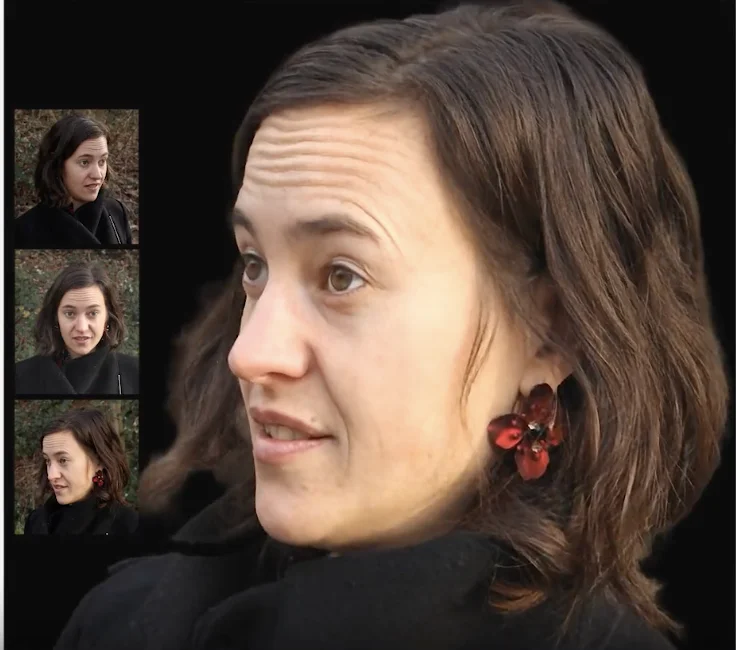

Resources & Open Source
Explore source code, detailed documentation, datasets, and releases published by our research group.
GNM (Generative aNthropometric Model)
Parametric 3D statistical human head and face geometry model providing fine-grained, disentangled control over identity, expressions, and head pose. The model contains controllable internal anatomy including eyeballs, teeth and tongue. Includes multi-framework backend support for NumPy, JAX, PyTorch, and TensorFlow, along with semantic parameter sampling.
View on GitHub
hdMitsuba
A robust USD Hydra render delegate that bridges the gap between rendering research and production pipelines by bringing Mitsuba 3 into the Pixar OpenUSD ecosystem. It enables OpenUSD to render scenes directly using Mitsuba, supporting efficient incremental updates, advanced features like spectral and polarized rendering, and limitless extensibility for custom BSDFs and cameras.
View on GitHub
Cafca Synthetic Dataset
The Cafca synthetic dataset provides high-quality data for research related to High-Quality Animatable Relightable Avatars.
View on GitHub